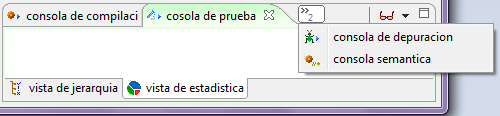
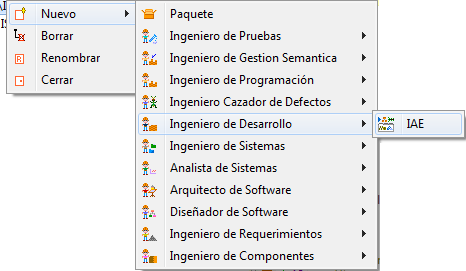
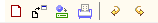
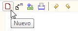
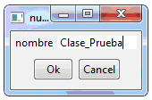
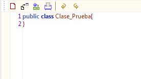
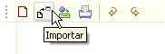
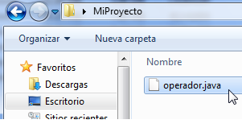
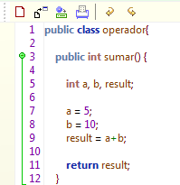
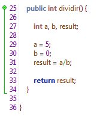

Plugin IAE
El Ambiente Integrado IAE es un Framework creado para facilitar al Ingeniero de Desarrollo todo el proceso de la producción de código, soportando la codificación, depuración, pruebas y señalización. Integra las herramientas: Editor de Código, Compilador y Depurador, Probador y Semantizador.

Figura 1. Vista general de los paneles del plugin IAE
Este ambiente combina en el marco de extensión las consolas de los plugins de desarrollo con sus respectivas vistas, todas funcionando independientemente sobre el mismo código.

Figura 2. Consola de depuración de IAE
Creación de un nuevo entorno de Desarrollo : Para utilizar el Framework IAE debe crear una instancia nueva del entorno mediante el Plugin IAE. Seleccione en el Marco de Expresión: Nuevo, Ingeniero de Desarrollo, IAE. Ingrese los datos correspondientes al Entorno como se muestra en la Figura 3.

Figura 3. Creando un entorno IAE

Figura 4. Barra de herramientas del plugin
Nueva Clase: Seleccione el icono Nuevo para crear una clase vacía.

Figura 5. Creando una clase
Escriba un nombre para la nueva clase, dicho nombre será usado también para nombrar el archivo de código fuente. Ej. (Clase_Prueba.java).

Figura 6. Creando una clase de prueba
Colosoft genera una nueva clase vacía e inicia el editor de código.

Figura 7. Clase de prueba en el editor de código
Importar Archivos de Código: Seleccione el botón Importar.

Figura 8. Importar código al entorno
Seguidamente se abrirá una ventana de selección de archivos. Importe archivos .java que contengan código fuente.

Figura 9. Archivos creados con el plugin
Editor: edite o inserte código a modo de texto, el editor de código de Colosoft permite trabajar cómodamente sobre el código resaltando con diferentes colores las palabras claves correspondientes al lenguaje de programación.

Figura 10. Editor de código
Colosoft también le permite resaltar módulos dentro del código mostrando llaves cuadradas al lado izquierdo del editor, como se muestra en la figura 11.

Figura 11. Resaltando porciones en el editor de código
Herramientas integradas: Este plugin ofrece todas las funciones disponibles en las funciones integradas correspondientes a los Plugins IPE, ITE, ISE, e IFE. Para mas información sobre el uso de estas herramientas, visite la siguiente documentación.